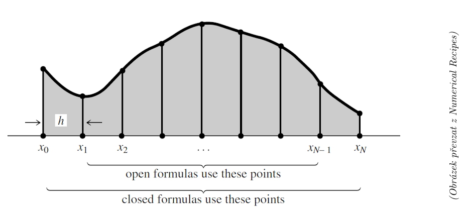
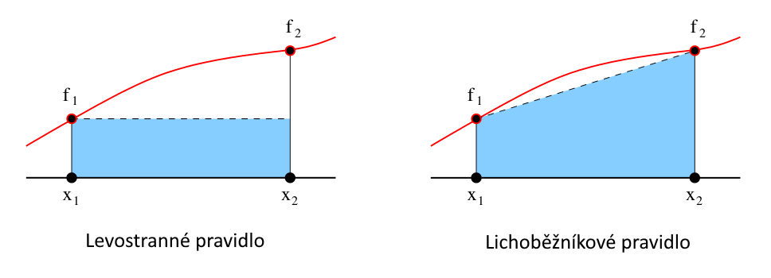
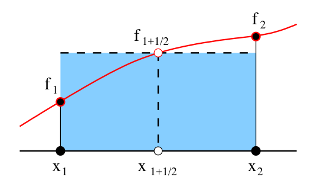

Připomínám, že 3.5. neproběhne cvičení v prezenční formě! Tento notebook slouží pro samostatné seznámení s tématem.
Vaším úkolem je látku projít a doplnit buňky podle vyznačených úkolů. Pro započítání docházky z této hodiny mi pošlete tento notebook s vyplněnými úkoly mailem. V případě nejasností se můžete podívat na materiály Martina Jirky nebo na video Honzy Vábka.
4. Numerická integrace (1D)#
V tomto cvičení si ukážeme několik numerických metod pro vyčíslení integrálů funkcí jedné proměnné (1D) na počítači. Ukažeme si také, jak se v určuje chyba a jak získat metodu vyššího řádu pomocí Rombergovy metody.
Numerické integrování funkcí, také nazývané kvadratura (výpočet obsahu plochy), spočívá v nahrazení integrálu konečnou sumou aproximující jeho hodnotu. Konkrétně se zajímáme o vyhodnocení intergálu tvaru:
Tato úloha je úzce spojená s řešením obyčejných diferenciálních rovnic (ODE). Výpočet určitého integrálu je speciální případ řešení ODE, tedy přímo ekvivalentní úloze:
s počáteční podmínkou \(I(a) = 0\), kde hledáme \(I(b)\). Metody pro řešení ODE kladou důraz na zavedení adaptivního kroku (\(h\)), kterým lze snadno kontrolovat chybu výpočtu v závislosti na tvaru funkce \(f(x)\). V některých případech může být skutečně výhodné úlohu výpočtu integrálu převést na ODE a řešit pomocí těchto metod. Řešením ODE budeme zabývat příští cvičení.
V první části si představíme několik jednoduchých pravidel: Newton-Cortesovy vzorce. Přestože byly používány po staletí, v dnešní době se v praxi používají již pokročilejší metody, které poskytují rychlejší konvergenci (menší počet vyhodnocení hodnoty funkce pro dosažení dané přesnosti) a zárověň davají přesný výsledek pro polynomy vysokého řádu. Zde si ukážeme jednu z těchto moderních metod: Gaussovy kvadratury. Na záver nahlídneme do problému integrování funkcí více proměnných.
Na přednášce byly ukázány také případy integrálu se singularitami nebo případ integrálu s nekonečnými mezemi. Tyto integrály lze typicky převést na určitý integrál konečného intervalu bez singularit. Proto se těmito případy zde zabývat nebudeme a budeme předpokládat integrál funkcí bez singularit přes konečný interval. O pokročilejších numerických metodách umožňujících přímo integrovat i tyto komplikované integrály se můžete dočíst v literatuře, viz Numerical Recipes.
Import knihoven:
import numpy as np
import matplotlib.pyplot as plt
Různé metody budeme testovat na následující funkci:
# definice funkce
def f(x):
return np.sin(x) * np.exp(np.cos(x))
# integrační inverval
a = 0.1
b = 2.8
Pro ověření porovnáme s přesnou hodnotou, kterou lze snadno v tomto případě spočítat pomocí primitivní funkce \(F(x) = -\exp(\cos{(x)})\):
# presna hodnota
def F(x):
return -np.exp(np.cos(x))
I_pres = F(b) - F(a)
print(I_pres)
2.3149749160962623
# vykreslení funkce
x_vals = np.linspace(-0.1, 3.4, 100)
plt.plot(x_vals, f(x_vals));
plt.hlines([0], xmin=-0.1, xmax=3.4, colors=['r'], linestyles=['--'])
plt.stem([a, b], [f(a), f(b)], '--g', linefmt=':g', markerfmt='o', basefmt=' ')
plt.text((a+b)/1.85, f((a+b)/2), 'f(x)')
plt.text(a, -0.1, 'a')
plt.text(b, -0.1, 'b');
4.1. Newton-Cortesovy vzorce#
Postup numerického výpočtu integrálu je následující. Uvažujeme funkci \(f(x)\) a chceme spočítat její integrál na intervalu \((a, b)\). Ten rozdělíme rovnoměrně na \(N\) podintervalů definovaných body \(x_0, x_1, \dots, x_{N-1}, x_{N}\) velikosti \(h\):
Funkci \(f\) pak vyhodnocujeme v jednotlivých bodech: \(f_i \equiv f(x_i)\).

Podle toho, jestli pro výpočet integrálu jsou používány hodnoty funkce v krajních bodech, rozdělujeme pravidla na:
Uzavřená formule - využívají hodnoty \(f(a)\) a \(f(b)\)
Otevřená formule - využívají pouze hodnoty uvnitř intervalu
Celé integrační formule se skládají z integračních pravidel pro přibližný výpočet integrálu v malém počtu podintervalů. Použítím konkrétního pravidla na všechny podintervaly pak získáme složenou formuli/vzorec na výpočet celého integrálu. Podrovněji si to ukážeme na jednotlivých pravidlech.
Různé metody poskytují aproximaci integrálu různých řádů přesnosti. Přesto je dobré vždy mít na paměti, že obecně neplatí:
vyšší řád \(\Rightarrow\) vyšší přesnost
V případě polynomů a téměř hladkých funkcí skutečně vede vyšší řád na přesnější výsledek při stejném počtu vyhodnočení funkce. Ale pokud funkce má například nespojité derivace, můžeme dostat méně přesný výsledek!
Jako první si ukážeme dvě uzavřená pravidla:

4.1.1. Levostranné pravidlo#
Chyba aproximace integrálu na jednom podintervalu je druhého řádu v \(h\). Zárověn závísí na hodnotě derivace funkce \(f\) v neznámém bodě uvnitř intervalu \((x_0, x_1)\). Jelikož tento bod neznáme, musíme velikost chyby určit pomocí jiného odhadu hodnoty integrálu. Stejný případ nastává u ostatních pravidel.
Složený vzorec dostaneme aplikací pravidla na všechny podintervaly: $\( \int_{x_0}^{x_N} f(x) dx = h \left[f_0 + f_1 + \dots + f_{N-1} + f_N\right] + \mathcal{O}\left(\frac{(b - a)^2}{N} f^{\prime}\right), \)$
kde jsme nahradili v odhadu chyby za \(N h^2 = \frac{(b - a)^2}{N} = (b-a) h\). Tedy metoda je celkově prvního řádu v \(N\) a je přesná pro polynomy nultého řádu (konstatní funkce).
Zvolíme počet podintervalů:
N = 100 # pocet podintervalu
Implementujte výpočet integrálu funkce \(f\) na intervalu \((a, b)\) pomocí levostranného pravidla.
def integ_levostranne(f, a, b, n):
I = 0 # hodnota integralu
x = np.linspace(a, b, n+1) # krajni body podintervalu x_i
for i in range(n):
h = x[i+1] - x[i]
I += h * f(x[i])
return I
I_levo = integ_levostranne(f, a, b, n=N)
print('I_levostranne:', I_levo)
print('I_presny: ', I_pres)
I_levostranne: 2.3166707678838026
I_presny: 2.3149749160962623
Odhad chyby integrálu
Jako u ostatních numerických metod bychom rádi určili chybu, se kterou nám metoda poskytla výsledek pro daný počet vyhodnocení funkce (počet podintervalů \(N\)).
Jak obecně určit chybu bez znalosti přesného výsledku? K tomu využijeme znalosti řádu metody. Konkrétně pro levostranné pravidlo víme, že dostaneme přibližnou hodnotu integrálu ve tvaru (lze odvodit pomocí Taylorova rozvoje, viz přednáška nebo [1]):
Trik spočívá ve využití výsledku stejné metody pro dvakrát větší velikost podintervalů, který je tvaru:
Když oba výsledky odečteme, dostaneme následující odhad chyby pro hodnotu \(I_h\):
Vidíme, že skutečně provádíme pouze odhad. Přesnou chybu nedokážeme určit, přesto nám tento odhad stačí. Víme totiž, že odchylka od reálné chyby je až vyššího řádu v \(h\) (zde konkrétně \(\sim h^2\)).
I_h = integ_levostranne(f, a, b, N)
I_2h = integ_levostranne(f, a, b, N//2)
chyba_levo = np.abs(I_2h - I_h)
print('Odhad chyby: ', chyba_levo)
print('Realná chyba:', np.abs(I_pres - I_h))
Odhad chyby: 0.0013221091504242999
Realná chyba: 0.0016958517875402812
4.1.2. Lichoběžníkové pravidlo#
Složený vzorec opět dostaneme aplikací pravidla na všechny podintervaly: $\( \int_{x_0}^{x_N} f(x) dx = h \left[\frac{1}{2}f_0 + f_1 + \dots + f_{N-1} + \frac{1}{2}f_N\right] + \mathcal{O}\left(\frac{(b - a)^3}{N^2} f^{\prime \prime}\right). \)$
Vidíme, že tato metoda je celkově druhého řádu v \(N\) a je přesná pro polynomy až prvního řádu.
Implementujte výpočet integrálu funkce \(f\) na intervalu \((a, b)\) pomocí lichoběžníkového pravidla.
def integ_lichobeznik(f, a, b, n):
I = 0 # hodnota integralu
x = np.linspace(a, b, n+1) # krajni body podintervalu x_i
## DOPLŇTE ##
return I
I_lich = integ_lichobeznik(f, a, b, n=N)
print('I_lichobeznik:', I_lich)
print('I_presny: ', I_pres)
I_lichobeznik: 2.314788087801567
I_presny: 2.3149749160962623
Odhad chyby integrálu
Opět chceme určit chybu integrálu. Tentokrát je rozvoj chyby pro lichoběžníkové pravidlo následující (lze odvodit pomocí Taylorova rozvoje, viz přednáška nebo [1]):
Pro odhad chyby tedy dostáváme:
Všimněte si, že rozvoj chyby zde obsahuje pouze sudé mocniny \(h\)! To znamená, že odhad chyby je pro tuto metodu velmi přesný. Navíc této vlastnosti lze vhodně využít ke konstrukci metod vyšších řádů, jak uvídíme v sekci Rombergova metoda.
I_h = integ_lichobeznik(f, a, b, N)
I_2h = integ_lichobeznik(f, a, b, N//2) # dvojnasobna velikost podintervalu h
chyba_lich = np.abs(I_2h - I_h) / 3
print('Odhad chyby: ', chyba_lich)
print('Realná chyba:', np.abs(I_pres - I_lich))
Odhad chyby: 0.0001868569772705738
Realná chyba: 0.00018682829469529594
4.1.3. Simpsonovo pravidlo#
Složený vzorec opět dostaneme aplikací pravidla na všechny podintervaly (zde implicitně předpokládáme, že \(N\) je sudé):
Tato tříbodová metoda je díky jisté symetrii dokonce čtvrtého řádu v \(N\) a je přesná pro polynomy až třetího řádu.
Implementujte výpočet integrálu funkce \(f\) na intervalu \((a, b)\) pomocí Simpsonova pravidla.
def integ_Simpson(f, a, b, n):
I = 0 # hodnota integralu
n += n % 2 # chceme n sude !
x = np.linspace(a, b, n+1) # krajni body podintervalu x_i
## DOPLŇTE ##
return I
I_simp = integ_Simpson(f, a, b, n=N)
print('I_Simpson:', I_simp)
print('I_presny: ', I_pres)
I_Simpson: 2.3149749447788404
I_presny: 2.3149749160962623
Odhad chyby integrálu
Opět chceme určit chybu integrálu. Tentokrát je rozvoj chyby pro Simpsonovo pravidlo následující:
Pro odhad chyby tedy dostáváme:
I_h = integ_Simpson(f, a, b, N)
I_2h = integ_Simpson(f, a, b, N//2)
chyba_simp = np.abs(I_2h - I_h) / 15
print('Odhad chyby: ', chyba_simp)
print('Realná chyba:', np.abs(I_pres - I_simp))
Odhad chyby: 2.8747315639066073e-08
Realná chyba: 2.868257809041097e-08
4.1.4. Obdélníkové pravidlo (midpoint rule)#

Jedním z otevřených pravidel je Obdélníkové pravidlo. Pravidlo může být výhodné využít v případech, kdy je obtížné nebo nemožné vyhodnotit hodnotu funkce v krajích bodech. Otevřená pravidla přesto nejsou dnes tolik zajímavá kvůli existenci pokročilejších metod Gaussových kvadratur. Přesto si zde jedno pro ukázku předvedeme:
Složený vzorec dostaneme aplikací pravidla na všechny podintervaly: $\( \int_{x_0}^{x_N} f(x) dx = h \left[f_{1/2} + f_{3/2} + \dots + f_{N-3/2} + f_{N - 1/2}\right] + \mathcal{O}\left(\frac{(b - a)^3}{N^2} f^{\prime}\right), \)$
Tedy metoda je celkově druhého řádu v \(N\) a je přesná pro polynomy prvního řádu.
Implementujte výpočet integrálu funkce \(f\) na intervalu \((a, b)\) pomocí obdélníkového pravidla.
def integ_obdelnik(f, a, b, n):
I = 0 # hodnota integralu
x = np.linspace(a, b, n+1) # krajni body podintervalu x_i
## DOPLŇTE ##
return I
I_obdk = integ_obdelnik(f, a, b, n=N)
print('I_obdelnik:', I_obdk)
print('I_presny: ', I_pres)
I_obdelnik: 2.3150683329311827
I_presny: 2.3149749160962623
Odhad chyby integrálu
Opět chceme určit chybu integrálu. Tentokrát je rozvoj chyby pro Simpsonovo pravidlo následující:
Pro odhad chyby tedy dostáváme:
I_h = integ_obdelnik(f, a, b, N)
I_2h = integ_obdelnik(f, a, b, N//2)
chyba_obdk = np.abs(I_2h - I_h) / 3
print('Odhad chyby: ', chyba_obdk)
print('Realná chyba:', np.abs(I_pres - I_obdk))
Odhad chyby: 9.344193406590762e-05
Realná chyba: 9.341683492047892e-05
4.1.5. Rombergova metoda#
Při odhadu chyb předchozích metod jsme viděli, že dokážeme přesně určit první člen v rozvoji chyby. Zajímavá myšlenka, která vede k Rombergově metodě, je využít hodnoty odhadu chyby pro zpřesnění vypočtené hodnoty integrálu. Ukážeme si to na lichoběžníkové metodě. Matematicky můžeme napsat:
A pro odhad chyby jsme měli:
Když odečneme chybu \(\varepsilon(I_h)\) od hodnoty integrálu:
Dostáváme přesnější odhad hodnoty integralu a celkově metodu čtvrtého řádu, podobně jako v případě Simpsonovy metody. Ve skutečnosti dostáváme přesně Simpsonovu metodu (při rozepsáni vyjde stejná rozšířená formule).
Obecně Rombergova metoda spočívá v kombinaci výsledků metody pro několik různých hodnot \(N\) (nebo \(h\)). Tím získáme přesnější výsledek a metodu vyššího řádu. Lichoběžníková metoda se zde obzvlášť hodí, jelikož rozvoj její chyby obsahuje pouze sudé mocniny a tedy dostáváme metodu o dva řády vyšší!
Pomocí předchozího vztahu aplikujte Rombergovu metodu s využitím právě lichoběžníkového pravidla. Stačí použít kombinaci dvou hodnot integrálu pro \(h\) a \(2h\). Zárověň určete chybu této nové metody. K tomu je opět potřeba spočítat hodnotu integrálu pro s jinou velikostí kroku \(I_{2h}^{new}\).
def integ_lichob_Romberg2(f, a, b, n):
## DOPLŇTE ##
return I_new
I_lich_romb = integ_lichob_Romberg2(f, a, b, n=N)
print('I_lich_romb:', I_lich_romb)
print('I_Simpson: ', I_simp)
print('I_presny: ', I_pres)
I_lich_romb: 2.3149749447788377
I_Simpson: 2.3149749447788404
I_presny: 2.3149749160962623
Odhad chyby
Zde je odhad stejný jako u Simpsonovy metody, jelikož jsou obě metody identické. Vidíme, že dostáváme téměř stejnou hodnotu integrálu jako u Simpsonovy metody (výsledek se liší v řádu \(10^{15}\) kvůli jinému pořadí operací a tedy díky zaokhrouhlovacím chybám).
I_h = integ_lichob_Romberg2(f, a, b, N)
I_2h = integ_lichob_Romberg2(f, a, b, N//2)
chyba_romb = np.abs(I_2h - I_h) / 15
print('Odhad chyby: ', chyba_romb)
print('Realná chyba:', np.abs(I_pres - I_lich_romb))
Odhad chyby: 2.8747315639066073e-08
Realná chyba: 2.868257542587571e-08
4.1.6. Srovnání metod - konvergence#
V této části srovnáme, s jakou přesností nám jednotlivé metody dávají výsledný integrál.
Definice nespojité funkce pro ověření konvergence pro nehladké funkce:
def g(x):
return np.sin(x) * np.sign(x**2 - 1*x - 7)
x2 = np.linspace(-5, 5, 100)
plt.plot(x2, g(x2));
Definice polynomu stupně npoly - 1 pro ověření absolutní přesnosti metod:
npoly = 3 # stupen polynomu + 1
fpoly = np.poly1d(np.arange(1, npoly+1))
fpoly
poly1d([1, 2, 3])
M = 12
Nstart = 4
integs = [integ_levostranne, integ_lichobeznik, integ_Simpson, integ_obdelnik, integ_lichob_Romberg2]
chybaCoef = [1, 3, 15, 3, 15]
nI = len(integs)
# prepnuti mezi ruznymi funkcemi
nespojitaFunkce = 0 # ZKUSIT "= 1"
if nespojitaFunkce:
fun = g
a = -5
b = 5
else:
fun = f # ZKUSIT "= fpoly"
a = 0.1
b = 2.8
# pole pro ulozeni prubezneho vysledku a chyby
errs = np.zeros([nI, M])
Ivals = np.zeros([nI, M])
Ns = np.zeros([nI, M])
for i in range(nI):
integ = integs[i]
for j in range(M):
n = Nstart * 2**j # zdvojnasobeni poctu podintervalu
# vypocet integralu a chyby
I_h = integ(fun, a, b, n)
I_2h = integ(fun, a, b, n//2)
chyba = np.abs(I_2h - I_h) / chybaCoef[i]
Ns[i][j] = 2*n
Ivals[i][j] = I_h
errs[i][j] = chyba
fig, ax = plt.subplots(1,2,figsize=(15,5))
# zobrazime vyvoj reseni v zavislosti na iteracich
ax[0].plot(Ivals.T)
if not nespojitaFunkce:
ax[0].hlines([I_pres], xmin=0, xmax=M, colors=['k'], linestyles=[':'])
ax[0].set_ylabel('reseni')
ax[0].set_xlabel('iterace')
ax[0].legend(['levostranné', 'lichoběžník', 'Simpson', 'obdélník', 'přesná hodnota', 'romberg2'])
# zobrazime vyvoj chyby v zavislosti na iteracich
ax[1].plot(Ns.T, errs.T)
ax[1].set_xscale('log')
ax[1].set_yscale('log')
ax[1].set_ylabel(r'$\epsilon$')
ax[1].set_xlabel('iterace')
ax[1].legend(['levostranné', 'lichoběžník', 'Simpson', 'obdélník', 'romberg2']);

Na předchozích grafech vidíme srovnání rychlostí konvergence pro jednotlivé představené metody integrace. Skutečně levostranné pravidlo vede na metodu prvního řádu, lichoběžníkové a obdélníkové pravidlo vedou na metodu druhého řádu a nakonec Simpsonovo pravidlo nám dává metodu až čtvrtého řádu.
Zdálo by se, že bychom chtěli vždy použít Simpsonovu metodu, jelikož nám poskytne větší přesnost s menšími výpočetními nároky. Ale je potřeba si opět uvědomit, že větší přesnost při větším řádu metody platí jen pro polynomy nebo skoro hladké funkce!
Vyzkoušejte předchozí analýzu na nespojitou funkci \(g(x)\). Stačí v předminulé buňce nastavit nespojitaFunkce = 1 a znovu vykreslit grafy. Jak se změnily konvergence jednotlivých metod? Je stále Simpsonova metoda nejlepší?
// DOPLŇTE ODPOVĚĎ //
Jak bylo popsáno, představené metody jsou přesné pro polynomy do určitého stupně. Ověřte tuto skutečnost opět pomocí dříve zadefinovaného polynomu fpoly stupně npoly. Stačí nastavit fun = fpoly v buňce počítající konvergence metod. Co pozorujete pro polynom fpoly stupně 1, 2, 3, 4, 5, 6? Uvědomte si, že chyba \(10^{-15} - 10^{-16}\) odpovídá maximální strojové přesnosti.
// DOPLŇTE ODPOVĚĎ //
4.2. Gaussovy kvadratury#
Na přednášce jste viděli teorii týkající se Gaussových kvadratur. Tyto metody jsou v praxi běžně používané, díky tomu, že jsou přesné pro polynomy do stupně až \(2N - 1\). Přesto si je zde nepředstavíme, jelikož by bylo časové náročné si je podrobně projít a analyzovat jejich vlastnosti. Na ukázku implementace se můžete podívat například zde.
Tato metoda je pro Python implementována v knihovně SciPy funkcí scipy.integrate.quad(). Tato funkce počítá hodnotu integrálu se strojovou přesností.
from scipy import integrate
I_gauss, chyba_gauss = integrate.quad(f, a, b)
print('I_gaussKvad:', I_gauss, '| chyba:', chyba_gauss)
print('I_presny: ', I_pres)
I_gaussKvad: 2.3149749160962623 | chyba: 5.1238144212141194e-12
I_presny: 2.3149749160962623
4.3. Integrace funkcí více proměnných (nD)#
V této části se budeme zabývat úlohou integrování funkcí více proměnných. Pro takové funkce lze použít předchozí metody, akorát rozšířené na integrování na nD mřížce. Je potřeba si ale uvědomit, že počet potřebných vyhodnocení funkční hodnoty roste exponenciálně s dimenzí! Například, pokud pro vyhodnocení integrálu je potřeba v každém “směru” (dimenzi) \(100\) bodů, musíme funkce v \(D = 5\) (funkce pěti proměnných) prostoru vyhodnotit celkem v \(100^5 = 10^{10}\) bodech! To již pro jisté funkce nemusí být upočitatelné na běžném počítači..
Funkce více proměnných jsou typicky lokalizované v malé oblasti nD prostoru (všude jinde je funkčí hodnota téměř nulová). Příkladem může být funkce gaussovkého tvaru. Proto se může vyplatit chytře vzorkovat nD prostor. Takové metody jsou založené na statistické teorii a vychází z jednodušších metod, které si zde představíme. Tyto metody využívají náhody, proto nesou název Metody Monte Carlo. Pod tímto označením se neskrývají pouze metody na integrování ale široká škála metod využívající náhodu.
4.3.1. Metoda Monte Carlo (1D)#
Metoda Monte Carlo je založená na statistickém vzorkování funkce. Ukážeme si dva jednoduché způsoby, jak lze vzorkování provést. Tyto metody lze dále vylepšit několika způsoby pro efektivnější vzorkování. Více se dozvíte v předmětu 18MMC.
Výhoda této metody je velmi jednoduchá implementace jak v 1D tak pro nD funce. My si metodu ukážeme opět na naší 1D funkci, rozšíření do nD je již jednoduché.
První způsob spočívá v následujících krocích: 0. zvolíme si počet pokusů \(N\)
najdeme \(K\) takové, že \(K > f(x), \forall x \in (a, b)\) (zde navíc předpokládáme, že je funkce kladná na celém intervalu - jinak je možné přičíst konstantu, tak aby byla..)
vygenerujeme náhodný bod \(x_r \in (a, b)\)
vygenerujeme náhodnou hodnotu \(y_r \in (0, K)\)
vzorek přijmeme, pokud \(f(x_r) > y_r\)
opakujeme body 2.-4. dokud neprovedeme \(N\) pokusů
pak výsledný integrál odhadneme: \(I \approx K (b - a) \frac{M}{N}\), kde \(M\) je počet přijatých vzorků
Tato metoda odpovídá statistickému výpoctu obsahu plochy útvaru, definovaném funkcí \(f\).
Na volbě \(K\) závisí, jak efektivně je funkce \(f\) vzorkováná. Pokud zvolíme příliš velké \(K\), skoro žádný vzorek nepřijmeme. Ideální je maximum funkce \(f\) na intervalu \((a, b)\), které ovšem může být v praxi obtížné určit a zárověň naše snaha je funkci vyhodnotit v co nejméně bodech v nD prostoru.
Implementujte první verzi metody Monte Carlo pro výpočet integrálu funkce \(f\). Odhadněte chybu metody.
np.random.rand() * (b - a) + a
1.5872294492845591
a = 0.1
b = 2.8
N = 10000
M = 0
K = 1.5 # zde odhadujeme ze znalosti, jak funkce vypada
for i in range(N):
xr = np.random.rand() * (b - a) + a # nahodne cislo z (a,b)
yr = np.random.rand() * K # nahodne cislo z (0,K)
if f(xr) >= yr:
M += 1
I_mmc1 = (b - a) * K * M / N
print('I_monteCarlo1:', I_mmc1)
print('I_presny: ', I_pres)
I_monteCarlo1: 2.35548
I_presny: 2.3149749160962623
Nevýhoda metody Monte Carlo je rychlost konvergence. Je možné ukázat, že chyba je tvaru:
kde \(\sigma_N\) je variance, \(V\) velikost oblasti a \(N\) počet vzorků. Chyba tedy klesá pouze s odmocninou počtu vzorků! Je tedy jasné, že pro funkce málo proměnných je naprosto neužitečná, jelikož máme k dispozici metody, které konvergují výrazně rychleji. Ale při \(D \geq 8\) už začíná mít tato metoda (ve vylepšené formě) význam a velká výhoda je pak jednoduchost implementace.
Pro první metodu použijeme pouze \(\varepsilon \sim \frac{1}{\sqrt{M}}\). Přesnější vztah s variací lze použít u druhé verze.
# zde odhadneme pouze pomoci 1/sqrt(M)
chyba_mmc1 = (b - a) / np.sqrt(M)
print('Odhad chyby: ', chyba_mmc1)
print('Realná chyba:', np.abs(I_pres - I_mmc1))
Odhad chyby: 0.03540393748647288
Realná chyba: 0.04050508390373775
Druhá verze metody Monte Carlo používá nahrazení integrálu pomocí konečného součtu funkčních hodnot v náhodně vygenerovaných bodech \(x_i\):
Velká výhoda této verze je, že nemusíme určovat konstantu \(K\) a také funkce může být rovnou záporná i kladná na intervalu \((a, b)\). Také lze přesněji odhadnout chybu pomocí variace, jelikož počítáme s funkčními hodnotami:
kde \(\langle f \rangle = \frac{1}{N} \sum_{i=1}^{N} f(x_i)\) a \(\langle f^2 \rangle = \frac{1}{N} \sum_{i=1}^{N} f^2(x_i)\).
Implementujte druhou verzi metody Monte Carlo pro výpočet integrálu funkce \(f\). Odhadněte chybu metody.
M = 10000
f_sum = 0 # prubezny soucet funkcnich hodnot f(xi)
f2_sum = 0 # prubezny soucet druhe mocniny funkcnich hodnot f(xi)**2 - pro vypocet chyby
for i in range(M):
## DOPLŇTE ##
I_mmc2 = (b - a) / M * f_sum
print('I_monteCarlo2:', I_mmc2)
print('I_presny: ', I_pres)
I_monteCarlo2: 2.3214348407828
I_presny: 2.3149749160962623
# zde odhadneme pouze pomoci var/sqrt(M)
chyba_mmc2 = (b - a) * np.sqrt((f2_sum / M - (f_sum / M)**2) / M)
print('Odhad chyby: ', chyba_mmc2)
print('Realná chyba:', np.abs(I_pres - I_mmc2))
Odhad chyby: 0.01174638353782135
Realná chyba: 0.006459924686537555
Vidíme, že i pro větší počty vzorků máme výsledek přesně jen na malý počet číslic. Implementace pro funkce mnoha proměnných by byla analogická, akorát by bylo potřeba generovat více náhodných čísel pro jednotlivé proměnné.